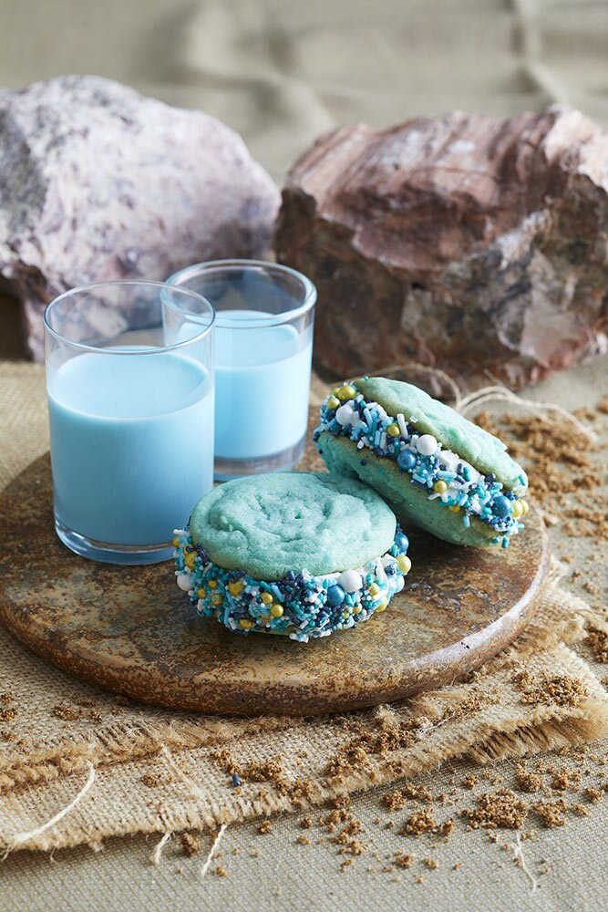

Blue Butter Sandwich Cookies

Description
Delicious blue butter ice cream sandwiches
Ingredients
- 2 3/4 cups all-purpose flour
- 1 teaspoon baking soda
- 1/2 teaspoon baking powder
- 1 cup unsalted butter, softened
- 1 1/2 cups granulated sugar
- 1 large egg
- 1 teaspoon vanilla extract
- 1 teaspoon blue food coloring gel
- Rainbow sprinkles
- 1 quart vanilla or birthday cake–flavored ice cream
Steps
- Preheat oven to 375°F. In a medium bowl stir together flour, baking soda, and baking powder. In a large mixing bowl beat butter with a hand mixer until softened. Gradually beat in sugar until light and fluffy. Beat in egg, vanilla, and food coloring. Gradually add flour mixture and beat until combined.
- Line two large rimmed baking sheets with parchment paper. Place rounded tablespoonfuls of dough 2 inches apart on prepared baking sheets. Bake for 8 to 10 minutes or just until done in center and edges are barely browned. Let cool on baking sheets for 5 minutes. Transfer cookies to a cooling rack to cool completely. When cooled, chill cookies in the freezer for about 30 minutes before filling.
- Place sprinkles in a shallow bowl and put in freezer to chill. Allow ice cream to soften at room temperature for 10 minutes before filling cookies.
- To fill cookies, place a small scoop of ice cream on bottom side of a chilled cookie. Top with another cookie. Press together until ice cream is squished to edges of cookies. Quickly roll edges in chilled sprinkles and place cookie sandwich in a container in the freezer. Repeat with remaining cookies, ice cream, and sprinkles.